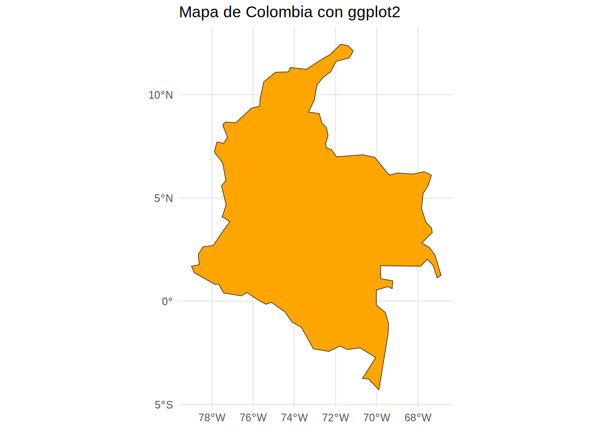

import leafmap
# 1. Crear el objeto mapa centrado en el Ecuador con zoom global
# Leafmap permite usar diversos mapas base por defecto
m = leafmap.Map(center=[0, 0], zoom=2)
# 2. Definir la ruta del archivo GeoJSON (Cables submarinos)
# Se utiliza una URL de release para mayor compatibilidad con los drivers GDAL
in_geojson = (
"https://github.com/opengeos/datasets/releases/download/vector/cables.geojson"
)
# 3. Añadir la capa al mapa con un nombre específico
# Este método lee el archivo remoto y lo renderiza sobre el mapa base
m.add_geojson(in_geojson, layer_name="Líneas de Cable")
# 4. Mostrar el mapa interactivo
m5 Visualización y Mapas Dinámicos
5.1 Introducción
En la Geomática moderna, la capacidad de comunicar resultados mediante mapas interactivos y salidas gráficas de alta calidad es fundamental. Gracias a iniciativas como OpenGeos y el ecosistema de R-Spatial, hoy podemos generar productos cartográficos profesionales con muy pocas líneas de código.
5.2 Visualización Interactiva (Web Maps)
Los mapas dinámicos permiten explorar datos espaciales con zoom y desplazamiento, facilitando la validación de información en tiempo real.
En Python, utilizamos leafmap para datos vectoriales y geemap para el procesamiento masivo en la nube con Google Earth Engine.
Documentación de leafmap aquí!
Documentación de geemap aquí!
import geemap
# 1. Crear el mapa centrado en un punto (Bogotá) para evitar errores de geometría
m = geemap.Map(center=[4.63, -74.08], zoom=10)
# 2. Cargar colección Sentinel-2 Armonizada (ID corArecto para 2024)
collection = (
geemap.ee.ImageCollection('COPERNICUS/S2_SR_HARMONIZED')
.filterDate('2024-01-01', '2024-03-31')
.median()
)
# 3. Parámetros de visualización simples
vis_params = {'min': 0, 'max': 3000, 'bands': ['B4', 'B3', 'B2']}
# 4. Añadir capa y mostrar
m.addLayer(collection, vis_params, 'Sentinel-2 UNAL')
mEn R, mapview ofrece una solución de una sola línea para visualizar objetos espaciales de forma interactiva.
Documentación sobre mapview aquí!
library(sf)
library(mapview)
# 1. Crear punto de referencia UNAL Bogotá (EPSG:4326)
unal <- st_sfc(st_point(c(-74.08, 4.63)), crs = 4326)
# 2. Visualización interactiva inmediata
# Genera automáticamente controles de capas y mapas base
mapview(unal, col.regions = "red", layer.name = "Sede Bogotá")5.3 Visualización Estática (Mapas para Publicación)
Para reportes profesionales o artículos científicos, se requiere un control total sobre la estética, escalas y grillas.
Geopandas es una herramienta que une el análisis de datos tradicional en python (pandas) con la cartografía, permitiéndote manipular formas geométricas con la misma facilidad con la que manipulas columnas en una hoja de Excel. Geopandas usa por debajo la librería matplotlib para hacer los mapas estáticos y leaflet para los dinámicos.
Documentación sobre geopandas aquí!
# Instala la librería geodatasets.
#!pip3 install geodatasets
# Importa geopandas y geodatasets.
import geopandas
from geodatasets import get_path
# Obtiene la ruta del dataset:
# "nybb" (New York Borough Boundaries).
path_to_data = get_path("nybb")
# Lee el archivo y lo convierte
# en un GeoDataFrame
gdf = geopandas.read_file(path_to_data)
# Muestra la tabla.
gdf
# --- Visualización Estática ---
# Genera un mapa fijo usando Matplotlib, coloreando por el nombre del distrito.
# Se incluye una leyenda para identificar cada color con su respectivo 'Borough'.
gdf.plot("BoroName", legend=True)
# --- Visualización Dinámica ---
# Crea un mapa interactivo basado en Leaflet.
# El mapa base se carga automáticamente.
gdf.explore("BoroName", legend=False)tmap permite una gramática puramente cartográfica, mientras que ggplot2 integra el mapa en flujos de trabajo estadísticos.
Documentación sobre tmap aquí!
Documentación sobre ggplot2 + sf aquí!
# #| eval: false
library(sf)Linking to GEOS 3.12.1, GDAL 3.8.4, PROJ 9.4.0; sf_use_s2() is TRUElibrary(tmap)
library(ggplot2)
# --- Usando tmap (Ideal para cartografía temática) ---
data("World")
col <- World[World$name == "Colombia", ]
tm_shape(col) +
tm_polygons("pop_est", palette = "Blues", title = "Población Est.") +
tm_compass(position = c("right", "top")) +
tm_scale_bar()── tmap v3 code detected ───────────────────────────────────────────────────────[v3->v4] `tm_tm_polygons()`: migrate the argument(s) related to the scale of
the visual variable `fill` namely 'palette' (rename to 'values') to fill.scale
= tm_scale(<HERE>).
[v3->v4] `tm_polygons()`: migrate the argument(s) related to the legend of the
visual variable `fill` namely 'title' to 'fill.legend = tm_legend(<HERE>)'
! `tm_scale_bar()` is deprecated. Please use `tm_scalebar()` instead.
The visual variable `fill` of the layer "polygons" contains a unique value.
Therefore a discrete scale is applied (tm_scale_discrete).
[cols4all] color palettes: use palettes from the R package cols4all. Run
`cols4all::c4a_gui()` to explore them. The old palette name "Blues" is named
"brewer.blues"
Multiple palettes called "blues" found: "brewer.blues", "matplotlib.blues". The first one, "brewer.blues", is returned.
# --- Usando ggplot2 (Gramática de gráficos) ---
ggplot() +
geom_sf(data = col, fill = "orange", color = "black") +
theme_minimal() +
labs(title = "Mapa de Colombia con ggplot2")
Notas de Reproducibilidad
- Persistencia: Recuerde trabajar siempre dentro de
/home/rstudio/workpara que sus scripts no se borren al reiniciar el contenedor. - Red: La visualización de capas remotas requiere conexión a internet estable dentro del entorno Docker.
- Motores: Todo el renderizado depende de las librerías de sistema GDAL, GEOS y PROJ preinstaladas.
Ejercicio
Intente cargar un archivo vectorial local desde su carpeta de trabajo y visualícelo usando mapview en R o m.add_gdf() en Python.
5.4 🏁 Desafío de Laboratorio: Visualización Geoespacial
Este laboratorio busca consolidar el manejo de las herramientas de Jupyter Lab y VSCode usando lenguaje Quarto. Adicionalmente es una introducción rápica a la creación de mapas estáticos y dinámicos y su exportación a formato HTML. La geomática es la ciencia de gestionar información geográfica mediante mapas digitales y análisis de datos. Si hay una frase que describe a la geomática, es la creación y análisis de mapas digitales. El objetivo es que el estudiante valide el funcionamiento de algunos de los entornos de trabajo instalados.
🛠️ Instrucciones de Entrega
- Creen un nuevo repositorio en su GitHub personal llamado
taller1-sig-visualizacion. - Todas las respuestas escritas deben estar en un archivo
respuestas.qmd. - Rendericen
respuestas.qmda HTML y PDF. - Suban al repositorio los 4 notebooks solicitados y los archivos de Quarto.
⚙️ Parte A — Notebooks de Clase (Reproducibilidad)
Creen cuatro notebooks donde ejecuten exactamente el código desarrollado en clase. Esto asegura que su entorno (Docker/Jupyter) está correctamente configurado.
📒 Notebooks Obligatorios:
01_python_estatico.ipynb: Código degeopandas+geodatasetspara graficar los distritos de Nueva York (nybb) usando.plot().02_python_dinamico.ipynb: Código deleafmapcargando el GeoJSON de cables submarinos y el código degeemapcon Sentinel-2 Armonizada.03_r_estatico.ipynb: Código desf+tmapmostrando el mapa de población de Colombia con brújula y escala.04_r_dinamico.ipynb: Código demapviewmostrando el punto de la Sede Bogotá con la configuración para notebooks.
Seguramente no podrá visualizar algunos de esos resultados usando Notebooks, como alternativa tiene VSCode y los archivos Quarto (pero esto es opcional)
🖥️ Parte B — Desafío de Exploración
En su archivo respuestas.qmd, elijan una de las siguientes librerías de Python (OpenGeos) y creen un nuevo bloque de código que demuestre una funcionalidad diferente a la vista en clase, guiándose por su documentación oficial:
- Leafmap: Implementar un mapa de pantalla dividida (
split-panel) o un inspector de atributos. - Geemap: Cargar un dataset diferente (ej. elevación SRTM o uso de suelo ESA WorldCover).
- Mapwidget: Crear un mapa utilizando un motor diferente como
CesiumoMapLibre. Documentación - Anymap-ts: Documentación.
- Anymap-ts: Documentación.
❓ Preguntas de Análisis para respuestas.qmd
1. 🥇 Facilidad e Intuición
Basado en los 4 notebooks de clase: ¿Cuál de las librerías les pareció más intuitiva para un usuario que nunca ha programado?
2. 🎨 Calidad Cartográfica
Para la entrega de un informe técnico en PDF, ¿qué motor consideran que genera mapas estáticos con mejor acabado visual: tmap, matplotlib (geopandas.plot), ggplot2?
3. 🌐 Potencial de la Documentación
Al revisar las URL de documentación entregadas, ¿qué funcionalidad avanzada encontraron en el ecosistema de OpenGeos que les sería útil para su trabajo final o investigación?
4. 🧠 Elección de Herramientas
Si tuvieran que atender una emergencia ambiental real y necesitan desplegar un visor web en menos de 5 minutos para que personal no técnico visualice una inundación, ¿qué herramienta elegirían y por qué? (Máximo 5 líneas).
💡 Nota para el éxito
La precisión en la ruta de los datos y el manejo de los kernels es fundamental. Si un mapa dinámico no carga, revise los mensajes de la consola de Quarto para descartar problemas de rutas de JavaScript. Y utilice IA para encontrar soluciones!